×
返回主页
赞赏
YU
ZU
资源整合站
返回主页
赞赏
请站长喝奶茶
支付宝扫码
您的捐赠将是鼓励我持续维护更新的动力。
OK
×
手机版YUZU教程
问题目录
点击以下即可轻松找到你想要解决的问题
1.如何设置游戏语言？\ 游戏全是外语不会设置？
2.如何导入游戏？\ 游戏下载完成后yuzu不识别?
3.如何导入密钥？\ 游戏打不开图标中间有问号?
4.如何导入固件？\ 游戏字体全是问号或者乱码?
5.如何安装驱动与设置？\ 闪退很卡画面有问题?
6.何为yuzu安卓版?\ 小白初次接触yuzu模拟器？
7.为何无法安装yuzu?\ 解析软件包时出现错误？
8.该网站有何作用？\ 站长开发这个网站的意图？
1.游戏语言设置方法
打开游戏发现全是外语？
这是由于yuzu的默认模拟语言的英文
1.在yuzu首页打开右下角的设置
2.打开高级选项>系统>模拟语言
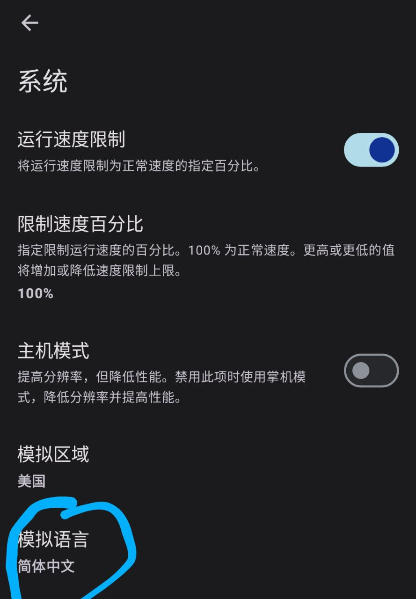
3.打开模拟语言选择中文即可
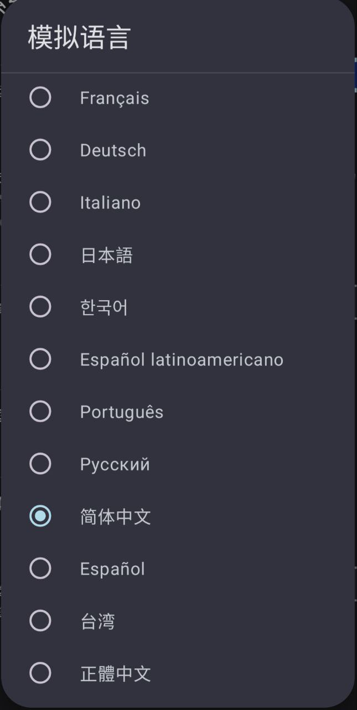
注意
：并非所有的游戏都内置中文即使改了模拟语言也没用
2.导入游戏文件
打开yuzu后发现空空如也?
这是由于yuzu本身是不会主动扫描你的文件 你需要手动导入
1.在yuzu首页打开右下角的设置
2.在设置页点击"Manage game folders"
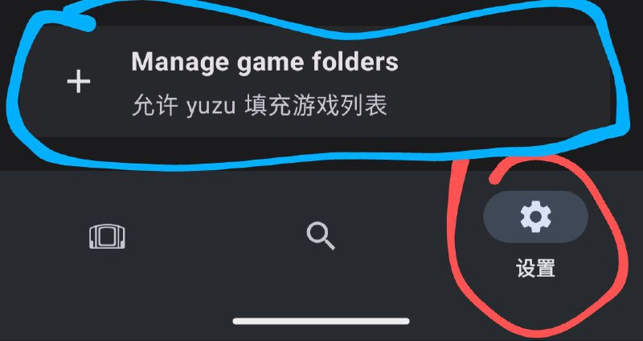
3.打开"Manage game folders"后点击右下角的“＋”
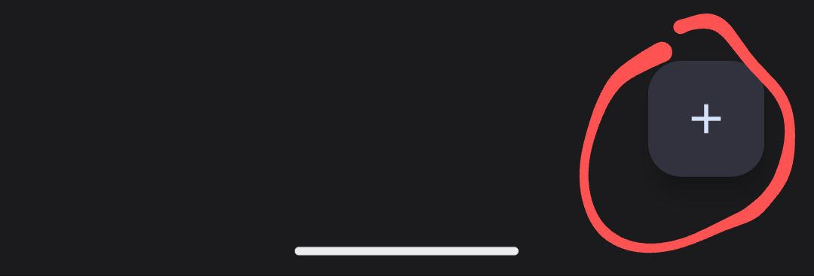
4.找到你的游戏下载的目录然后点击使用此文件夹完成导入.
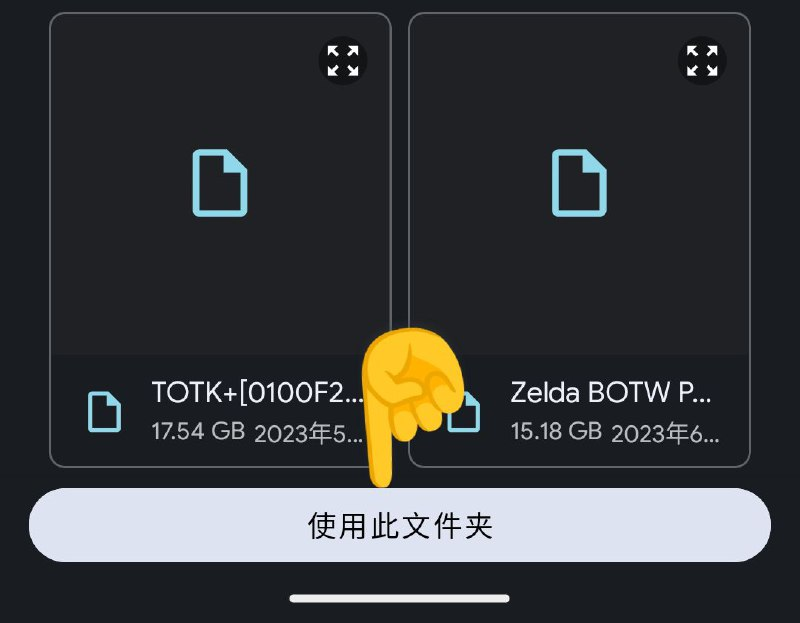
提示：一般浏览器的默认下载目录都会在"根目录\Download"文件夹下
注意
：yuzu支持的游戏格式为nsp与xci在下载游戏前注意观察后缀以免yuzu不识别
3.密钥导入方法
遇到了如下截图的问题？
所有游戏或者部分游戏中间带问号的都是因为没有密钥或者密钥版本过低导致的
1.首先下载好你的密钥文件
2.将密钥包解压到任意的目录下
3.在yuzu首页打开右下角的设置
4.打开管理yuzu管理数据
5.点击《安装prod.keys文件》
6.找到你刚刚解压好的prod.keys文件选中即可
4.固件导入与字体错误
遇到了如下截图的问题？
游戏内字体问号或者文本不显示都是因为没有安装固件导致的
1.首先本站主页下载好固件包
2.下载完成后不要解压固件包
3.在yuzu首页打开右下角的设置
4.点击《安装固件》
5.找到你刚刚下载好的固件包目录并点击导入
提示：一般浏览器的默认下载目录都会在"根目录\Download"文件夹下
5.正确的设置与驱动
遇到了如下截图的问题？
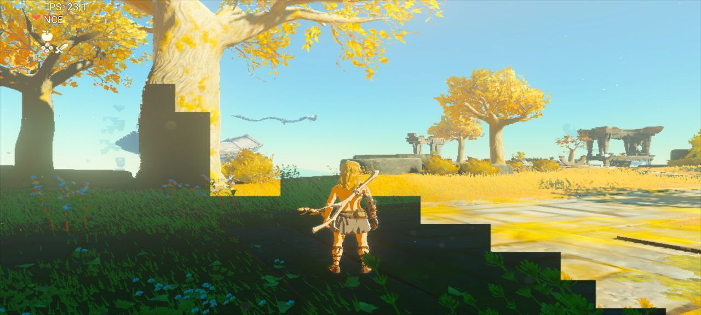
这是由于您没有正确的设置或者使用合适的驱动导致的画面错误或者卡顿
第一帧率的设置
1.在yuzu首页打开右下角的设置
2.打开高级选项>调试>CPU backend 选择(NCE)即可获得最佳的运行效率。
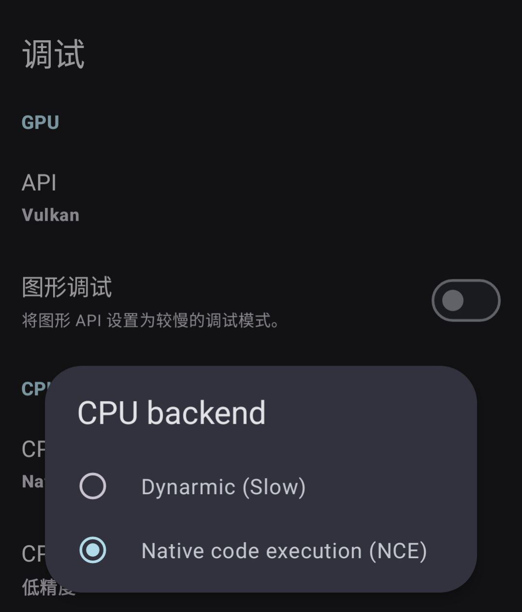
如果您的GPU性能比较弱可以适当的降低游戏分辨率
1.打开高级选项>图像>分辨率（掌机模式/主机模式）选择0.75X或更低即可获得较好的运行效率。
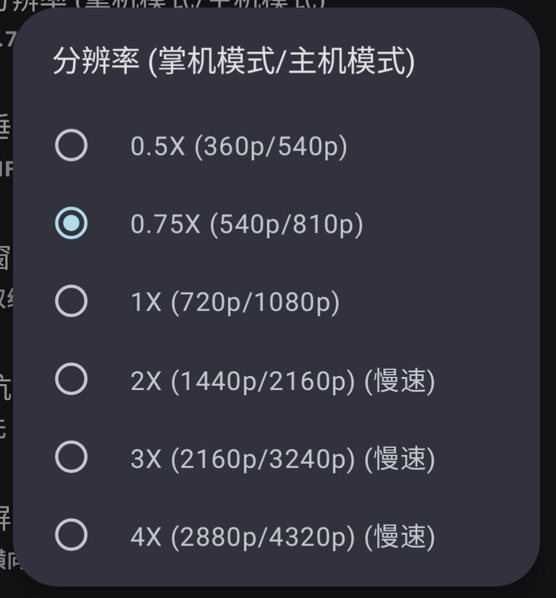
2.最佳化游戏运行帧率设置如图下 其余没提到的设置选项保持默认即可。
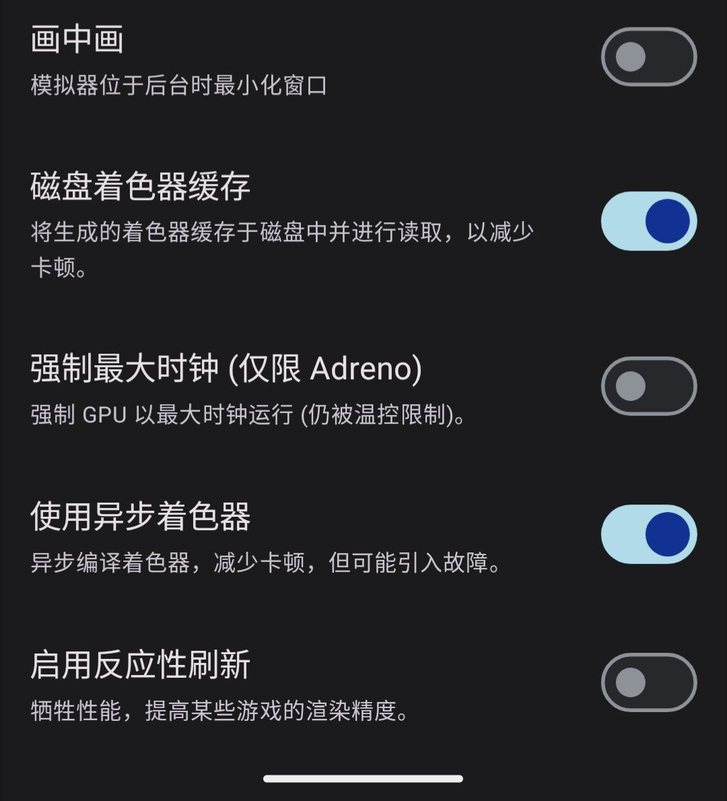
提示：不建议开启强制最大时钟除非你root解除了温控否则会降频或者过热。
第二驱动的安装
1.首先在本站主页下载好对应的驱动（推荐用第一个萝卜驱动）
2.下载完成后不要解压驱动包
3.在yuzu首页打开右下角的设置
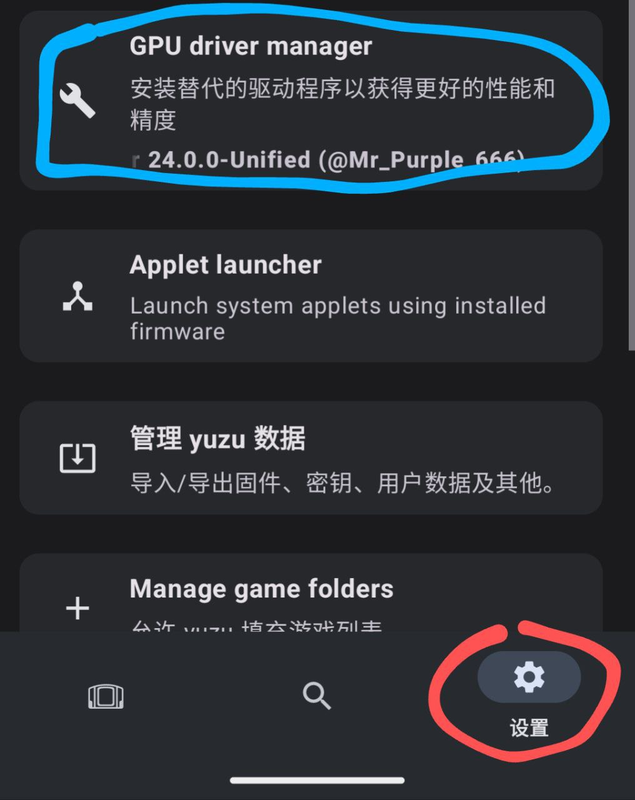
4.打开GPU drver manager
5.点击 Install（安装）
6.找到你刚刚下载好的驱动包所以在目录点击即可安装完成
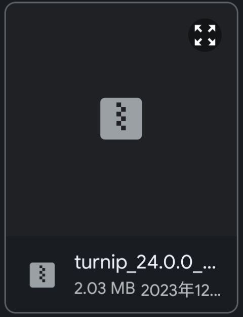
第三闪游戏退或打不开
1.没有选择适合的驱动一般yuzu推荐使用萝卜驱动
2.手机内存6G以下极易闪退 yuzu模拟器推荐8G以上才不容易闪退
3.排查是否太久没更新yuzu版本因为有时更新有可能意味着性能的优化
提示：一般浏览器的默认下载目录都会在"根目录\Download"文件夹下
注意
：天机和麒麟CPU无法安装驱动 天机和麒麟的GPU用的是Mali而Mali并没有开源驱动所以导致了无驱可用
6.何为YUZU模拟器？
Yuzu模拟器是一个让你在手机或者电脑上玩任天堂Switch游戏/软件
这意味着你可以在电脑或者手机上玩Switch游戏，而不需要实际拥有Switch主机。
然而，使用模拟器玩游戏要注意法律和游戏制造商的规定。
确保你使用合法的游戏备份文件或ROM，并遵守相关的法律法规，以避免侵犯版权或其他法律问题。
请点击这里访问yuzu官方的 GitHub 页面。
7.为何无法安装？
遇到了如下截图的问题？
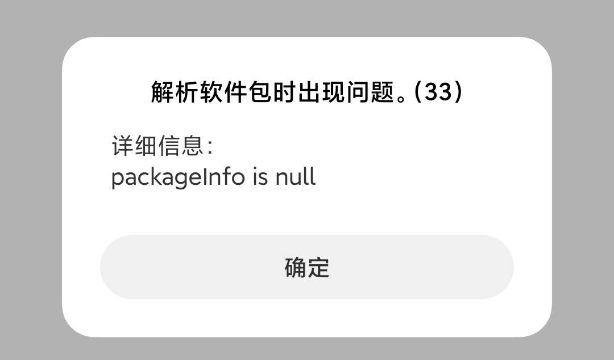
当在安卓设备上安装APK时，出现解析软件包问题可能是由于以下几个原因：
1.损坏的APK文件：APK文件可能在下载过程中损坏或未完整下载，导致无法正确解析。在这种情况下，您可以尝试重新下载APK文件，并确保下载完整。
2.不兼容的设备和Android版本：由于YUZU模拟器安卓版对系统要求是安卓11以上所以导致了您的设备无法正常安装
3.安全设置或权限问题：某些设备可能会限制安装来自未知来源的APK文件，或者需要特定的权限才能安装某些APK文件。在这种情况下，您可以在设备的设置中检查安全选项，允许安装未知来源的应用程序，并确保授予所需的权限。
4.内存空间不足：如果设备的存储空间不足，可能会导致解析软件包问题。请确保您的设备有足够的可用存储空间来安装APK文件。
8.站长的意图与感想
随着yuzu模拟器安卓版的发布，我发现许多人由于不熟悉使用GitHub或谷歌商店，导致下载了盗版或私改版的yuzu模拟器。
这些修改过的版本存在着可能被注入广告或病毒的风险。与此同时，我开发的资源站搬运的资源均来自官方，没有任何修改。
那么，为什么我要为大家开发这个整合网站呢？原因在于我秉持着互联网最初的分享精神。我不希望大家为了下载所需资源而被迫加入各种群组或被强制收费。
通过我的整合网站，大家可以方便地获第一时间获取更新、安全可靠的yuzu模拟器资源。这个资源站的创新点在于提供了官方资源的集中存储和分享，为大家提供了一个便捷的下载平台。
希望大家玩的开心 记得在Bilibili关注我噢！
蛋鐵君
如果喜欢我的网站快来B站关注我吧！
点击关注UP